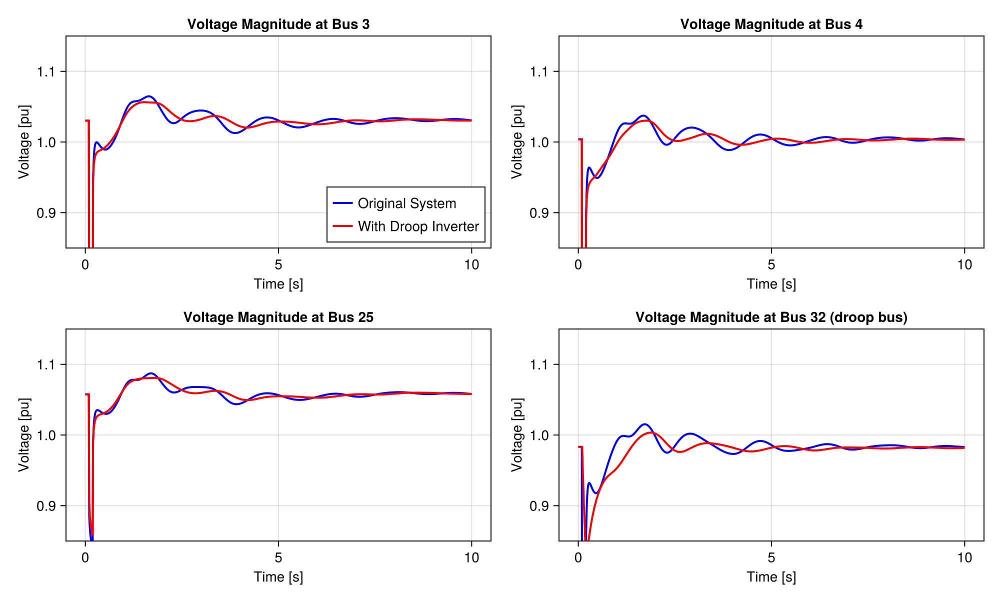
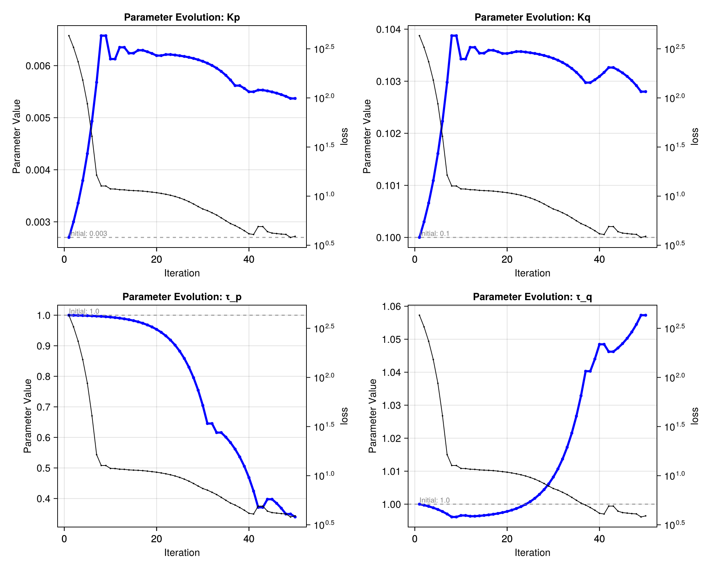

IEEE39 Bus Tutorial - Part IV: Advanced Modeling & Parameter Optimization
This tutorial can be downloaded as a normal Julia script here.
This is the fourth and final part of the IEEE 39-bus tutorial series:
- Part I: Model Creation - Build the network structure with buses, lines, and components
- Part II: Initialization - Perform power flow calculations and dynamic initialization
- Part III: Dynamic Simulation - Run time-domain simulations and analyze system behavior
- Part IV: Advanced Modeling & Parameter Optimization (this tutorial) - Create custom components and optimize system parameters
In this tutorial, we'll demonstrate advanced PowerDynamics.jl capabilities by:
- Creating a custom droop-controlled inverter component
- Integrating it into the IEEE 39-bus system
- Optimizing its parameters to improve system performance
This tutorial showcases custom component creation and the integration with Julia's optimization ecosystem for parameter tuning.
This tutorial is designed as a pedagogical example. It does not necessarily represent a realistic power system model and analysis, but rather serves to demonstrate the available tools while remaining relatively simple and concise.
# Loading required packages and setup
using PowerDynamics
using PowerDynamics.Library
using ModelingToolkitBase, SciCompDSL
using ModelingToolkitBase: D_nounits as Dt, t_nounits as t
using NetworkDynamics
using NetworkDynamics: SII
using OrdinaryDiffEqRosenbrock
using OrdinaryDiffEqNonlinearSolve
using SciMLSensitivity
using Optimization
using OptimizationOptimisers
using CairoMakie
using LinearAlgebra
using Graphs
using SparseConnectivityTracer
using Sparspak
# Load the network models from previous parts
EXAMPLEDIR = joinpath(pkgdir(PowerDynamics), "docs", "examples")
include(joinpath(EXAMPLEDIR, "ieee39_part1.jl")) # Creates the basic network model
include(joinpath(EXAMPLEDIR, "ieee39_part3.jl")) # Provides initialized network and reference solution[ Info: Short circuit activated on line 5→8 at t = 0.1s
[ Info: Line 5→8 disconnected at t = 0.2sIntegration of a Droop-Controlled Inverter
In this section, we'll modify our network by adding a droop-controlled inverter.
Mathematical Background
The droop-controlled inverter implements a decentralized control strategy commonly used in microgrids and renewable energy integration. It establishes the following relationships:
Power Measurement:
\[\begin{aligned} P_{meas} &= u_r \cdot i_r + u_i \cdot i_i\\ Q_{meas} &= u_i \cdot i_r - u_r \cdot i_i \end{aligned}\]
Power Filtering (Low-pass filtering for measurement noise reduction):
\[\begin{aligned} \tau \cdot \frac{dP_{filt}}{dt} &= P_{meas} - P_{filt} \\ \tau \cdot \frac{dQ_{filt}}{dt} &= Q_{meas} - Q_{filt} \end{aligned}\]
Droop Control:
\[\begin{aligned} \omega &= \omega_0 - K_p \cdot (P_{filt} - P_{set}) \\ V &= V_{set} - K_q \cdot (Q_{filt} - Q_{set}) \end{aligned}\]
Voltage Angle Dynamics:
\[\frac{d\delta}{dt} = \omega - \omega_0\]
Output Voltage:
\[\begin{aligned} u_r &= V \cdot \cos(\delta) \\ u_i &= V \cdot \sin(\delta) \end{aligned}\]
These equations implement:
- Frequency-Active Power Coupling (f-P): Frequency decreases when active power exceeds setpoint
- Voltage-Reactive Power Coupling (V-Q): Voltage decreases when reactive power exceeds setpoint
This mimics the natural behavior of synchronous generators and enables stable power sharing in islanded operation.
Definition of the Droop Inverter Component
Network components in PowerDynamics must follow the Injector Interface - they connect to the network through a single Terminal:
┌──────────────────────────┐
(t) │ │
o←───┤ Droop Inverter Equations │
│ │
└──────────────────────────┘We can define the following MTKModel to represent the droop inverter:
@mtkmodel DroopInverter begin
@components begin
terminal = Terminal()
end
@parameters begin
Pset, [description="Active power setpoint", guess=1]
Qset, [description="Reactive power setpoint", guess=0]
Vset, [description="Voltage magnitude setpoint", guess=1]
ωset=1, [description="Frequency setpoint [pu]"]
ωbase, [bound_to = :systembase₊ωbase, description="System frequency base [rad/s]"]
ωframe, [bound_to = :systembase₊ωframe, description="Global dq frame speed [pu]"]
Kp = 0.0027, [description="Active power droop coefficient [pu freq / pu power]"]
Kq=0.1, [description="Reactive power droop coefficient"]
τ_p = 1.0, [description="Active Power filter time constant [s]"]
τ_q = 1.0, [description="Reactive Power filter time constant [s]"]
end
@variables begin
Pmeas(t), [description="Measured active power", guess=1]
Qmeas(t), [description="Measured reactive power", guess=0]
Pfilt(t), [description="Filtered active power", guess=1]
Qfilt(t), [description="Filtered reactive power", guess=1]
ω(t), [description="Frequency"]
δ(t), [description="Voltage angle", guess=0]
V(t), [description="Voltage magnitude"]
end
@equations begin
# Power measurement from terminal quantities
Pmeas ~ terminal.u_r*terminal.i_r + terminal.u_i*terminal.i_i
Qmeas ~ terminal.u_i*terminal.i_r - terminal.u_r*terminal.i_i
# First-order low-pass filtering
τ_p * Dt(Pfilt) ~ Pmeas - Pfilt
τ_q * Dt(Qfilt) ~ Qmeas - Qfilt
# Droop control equations (ωset is a *setpoint*, not the frame speed)
ω ~ ωset - Kp * (Pfilt - Pset) # Frequency decreases with excess power
V ~ Vset - Kq * (Qfilt - Qset) # Voltage decreases with excess reactive power
# Voltage angle dynamics: δ is measured against the global dq frame, which
# rotates at ωframe [pu], i.e. ωbase*ωframe [rad/s].
Dt(δ) ~ ωbase*(ω - ωframe)
# Output voltage components
terminal.u_r ~ V*cos(δ)
terminal.u_i ~ V*sin(δ)
end
end;Creating a Bus with the Droop Inverter
Following the descriptions in Modeling Concepts, we build an MTKBus using the droop as the single injector and then compile the bus model, similar to how we define the templates in part I:
╔═════════════════════════╗
║ Droop (compiled) ║
Network ║ ┌────────────────────┐ ║
interface ║ │ MTKBus │ ║
current ────→│┌──────┐ ┌────────┐ │ ║
║ ││BusBar├o┤Inverter│ │ ║
voltage ←────│└──────┘ └────────┘ │ ║
║ └────────────────────┘ ║
╚═════════════════════════╝# Part I restored the global bases when it finished, so we set them again for the bus we
# build here. The droop model above is written entirely in per unit and never reads them,
# but the bus we are about to splice into the network gets its own `systembase` — and a
# single bus sitting on a different base than its 38 neighbours is a trap worth avoiding.
set_Sbase!(BASE_MVA); set_fbase!(BASE_FREQ)
@named inverter = DroopInverter()
mtkbus = MTKBus(inverter)
droop_bus_template = compile_bus(mtkbus; name=:DroopInverter)VertexModel :DroopInverter NoFeedForward()
├─ 2 inputs: [busbar₊i_r, busbar₊i_i]
├─ 3 states: [inverter₊δ≈0, inverter₊Qfilt≈1, inverter₊Pfilt≈1]
├─ 2 outputs: [busbar₊u_r≈1, busbar₊u_i≈0]
└─ 12 params: [busbar₊Vbase=1, systembase₊Sbase=100, systembase₊ωbase=376.99, systembase₊ωframe=1, inverter₊Pset≈1, inverter₊Qset≈0, inverter₊Vset≈1, inverter₊ωset=1, inverter₊Kp=0.0027, inverter₊Kq=0.1, inverter₊τ_p=1, inverter₊τ_q=1]We see that the droop inverter has 3 free parameters (you can check free_p(droop_bus_template) or dump_initial_state(droop_bus_template)). Therefore, similar to what we did in Part II, we need to help the initialization by attaching an additional initialization formula to the bus:
set_initformula!(
droop_bus_template,
@initformula(:inverter₊Vset = sqrt(:busbar₊u_r^2 + :busbar₊u_i^2))
)Network Modification with Droop Inverter
We'll replace bus 32 (originally a controlled generator bus) with our new droop inverter bus.
DROOP_BUS_IDX = 32To do so, we first collect all the "old" vertex and edge models.
We copy the components, to create individual instances for the new network. Since all the metadata (like the default values, initialize values and so on) are stored in the component models, we would otherwise share metadata between the old and the new network, which can lead to unexpected results.
vertex_models = [copy(nw[VIndex(i)]) for i in 1:nv(nw)];
edge_models = [copy(nw[EIndex(i)]) for i in 1:ne(nw)];Now we need to replace the original bus model at index DROOP_BUS_IDX with our new droop inverter bus. However, we don't want to lose the original power flow model associated with this bus, so we need to attach it to the droop bus model:
original_pfmodel = get_pfmodel(vertex_models[DROOP_BUS_IDX])We can then use the Bus constructor to essentially copy the droopbustemplate and adjust some properties, like the powerflow model and the vertex index.
droop_bus = compile_bus(droop_bus_template; pf=original_pfmodel, vidx=DROOP_BUS_IDX)VertexModel :DroopInverter NoFeedForward() @ Vertex 32
├─ 2 inputs: [busbar₊i_r, busbar₊i_i]
├─ 3 states: [inverter₊δ≈0, inverter₊Qfilt≈1, inverter₊Pfilt≈1]
├─ 2 outputs: [busbar₊u_r≈1, busbar₊u_i≈0]
├─ 12 params: [busbar₊Vbase=1, systembase₊Sbase=100, systembase₊ωbase=376.99, systembase₊ωframe=1, inverter₊Pset≈1, inverter₊Qset≈0, inverter₊Vset≈1, inverter₊ωset=1, inverter₊Kp=0.0027, inverter₊Kq=0.1, inverter₊τ_p=1, inverter₊τ_q=1]
└─ 1 InitFormula cluster:
explicitly initializes 1/8 variables from seeds [busbar₊u_i, busbar₊u_r]
Powerflow model :pvbus with [busbar₊Vbase=1, systembase₊Sbase=100, systembase₊ωbase=376.99, systembase₊ωframe=1, pv₊P=6.5, pv₊V=0.9831]We then replace the original bus model in the array with our droop bus and build a network again:
vertex_models[DROOP_BUS_IDX] = droop_bus
nw_droop = Network(vertex_models, edge_models)
set_jac_prototype!(nw_droop; remove_conditions=true)Network with 181 states and 1631 parameters
├─ 39 vertices (6 unique types)
└─ 46 edges (1 unique type)
Edge-Aggregation using SequentialAggregator(+)
Jacobian prototype defined: 7.07% sparsity
2 callback sets across 0 vertices and 1 edgeAdditionally, we've set the jacobian prototype for performance gains during simulation and optimization, see NetworkDynamics docs on Sparsity Detection.
Network Initialization with Droop Inverter
The modified network requires the same initialization steps as the original:
- Power flow solution
- Dynamic component initialization
This all happens within initialize_from_pf!:
s0_droop = initialize_from_pf!(nw_droop; verbose=false)Let's examine the initialized state of our droop inverter:
dump_initial_state(nw_droop[VIndex(DROOP_BUS_IDX)]; obs=false)Inputs:
busbar₊i_i = 1.7883 (guess 0)
busbar₊i_r = -6.6986 (guess 0)
States:
inverter₊Pfilt = 6.5 (guess 1)
inverter₊Qfilt = 2.0514 (guess 1)
inverter₊δ = 0.044837 (guess 0)
Outputs:
busbar₊u_i = 0.044064 (guess 0)
busbar₊u_r = 0.98211 (guess 1)
Parameters:
busbar₊Vbase = 1
inverter₊Kp = 0.0027
inverter₊Kq = 0.1
inverter₊Pset = 6.5 (guess 1)
inverter₊Qset = 2.0514 (guess 0)
inverter₊Vset = 0.9831 (guess 1)
inverter₊τ_p = 1
inverter₊τ_q = 1
inverter₊ωset = 1
systembase₊Sbase = 100
systembase₊ωbase = 376.99
systembase₊ωframe = 1We see that the filtered powers match the setpoints (steady state), and both $P$ and $V_\mathrm{set}$ are initialized according to the parameters of the PV powerflow model.
Simulation with Droop Inverter
Now we'll simulate the modified network and compare it with the original system response:
prob_droop = ODEProblem(nw_droop, s0_droop, (0.0, 15.0))
sol_droop = solve(prob_droop, Rodas5P())
@assert SciMLBase.successful_retcode(sol_droop)[ Info: Short circuit activated on line 5→8 at t = 0.1s
[ Info: Line 5→8 disconnected at t = 0.2sComparison of System Responses
Let's compare how the droop inverter affects the system's response to the short circuit disturbance:
let fig = Figure(; size=(1000, 600))
selected_buses = [3, 4, 25, DROOP_BUS_IDX] # Representative buses including the droop bus
ts = range(0, 10, length=1000)
for (i, bus) in enumerate(selected_buses)
row, col = divrem(i-1, 2) .+ (1, 1)
ax = Axis(fig[row, col];
title="Voltage Magnitude at Bus $bus" * (bus==DROOP_BUS_IDX ? " (droop bus)" : ""),
xlabel="Time [s]",
ylabel="Voltage [pu]")
# Original system response
lines!(ax, ts, sol(ts; idxs=VIndex(bus, :busbar₊u_mag)).u;
label="Original System", color=:blue, linewidth=2)
# Droop inverter system response
lines!(ax, ts, sol_droop(ts; idxs=VIndex(bus, :busbar₊u_mag)).u;
label="With Droop Inverter", color=:red, linewidth=2)
ylims!(ax, 0.85, 1.15)
i == 1 && axislegend(ax; position=:rb)
end
fig
end
We see that the overall system reacts similarly but distinctly differently to the identical disturbance.
Parameter Optimization
To showcase advanced capabilities of the SciML-ecosystem and the integration with PowerDynamics.jl, we now want to try to tune the droop inverter parameters so that the overall system behavior more closely resembles the original behavior, i.e., to reduce the difference between the system with generator and the system with droop inverter.
Optimization Problem Formulation
We define a loss function that measures the deviation between the original system response and the modified system response:
\[L(p) = \sum_{i,t} |x_{ref}(t)_i - x(t;p)_i|^2\]
Where we have
- Parameters $p = [K_p, K_q, \tau]$ to be optimized
- the reference solution $x_{ref}(t)$ (original system)
- the solution of the modified system $x(t;p)$ with updated parameters $p$
Goal: Find parameters $p$ that minimize this loss function, making the droop inverter system behave as closely as possible to the original system.
Setting Up the Optimization
First, we define the reference solution and identify the tunable parameters.
We probe the original solution at fixed timepoints, exporting u_r and u_i for every bus:
opt_ref = sol(0.3:0.1:10, idxs=[VIndex(1:39, :busbar₊u_r), VIndex(1:39, :busbar₊u_i)])Next, we need to identify the "tunable" parameters. This is a bit tricky, because the overall nw_droop has 1271 parameters, so we need to find the indices of the parameters we want to tune in the flat parameter array. We can do so, by leveraging NetworkDynamics implementation of the SymbolicIndexingInterface: tunable_parameters = [:inverter₊Kp, :inverter₊Kq, :inverter₊τ]
tunable_parameters = [:inverter₊Kp, :inverter₊Kq, :inverter₊τ_p, :inverter₊τ_q]
tp_idx = SII.parameter_index(sol_droop, VIndex(DROOP_BUS_IDX, tunable_parameters))4-element Vector{Int64}:
631
632
633
634We also get their initial values, which we use as the starting point for the optimization.
p0 = sol_droop(sol_droop.t[begin], idxs=collect(VIndex(DROOP_BUS_IDX, tunable_parameters)))4-element Vector{Float64}:
0.0027
0.1
1.0
1.0Loss Function Implementation
The loss function simulates the system with given parameters and compares the result to the reference:
function loss(p)
# Create parameter vector for the full system
# allp = similar(p, pdim(nw_droop)) # create a vector of the full length
allp = similar(p, length(s0_droop.p)) # create a vector of the full length
allp .= pflat(s0_droop.p) # copy all "initial" parameters to that vector
allp[tp_idx] .= p # Update only the tunable parameters with the parameters for the given optimization iteration
# Solve the system with new parameters
_sol = solve(prob_droop, Rodas5P(autodiff=Optimization.AutoForwardDiff());
p = allp,
saveat = opt_ref.t,
tspan=(0.0, opt_ref.t[end]),
initializealg = SciMLBase.NoInit(),
abstol=0.01,
reltol=0.01
)
# Return infinite loss if simulation failed
if !SciMLBase.successful_retcode(_sol)
@warn "Retcode $(_sol.retcode) indicates a failed simulation, returning Inf loss"
return Inf
end
# Extract solution at reference time points
x = _sol(opt_ref.t; idxs=[VIndex(1:39, :busbar₊u_r), VIndex(1:39, :busbar₊u_i)])
# Compute L2 norm of the difference
res = opt_ref.u - x.u
l2loss = sum(abs2, reduce(vcat, res))
endOptimization Execution
We use the Optimization.jl ecosystem, with Rprop as the optimizer.
The choice matters here, because our four parameters differ by three orders of magnitude (Kp ≈ 0.0027 against τ_q = 1). That rules out any method taking a common step in all directions: a step large enough to move the time constants sends Kp straight through zero on the first iteration, and a negative droop coefficient inverts the feedback (frequency rises with excess power), so the simulation diverges rather than merely scoring badly. Adam does not rescue us — it adapts to the gradient's magnitude, not the parameter's, and those rescale inversely.
Rprop handles it natively: it discards the gradient's magnitude and uses only its sign, carrying a separate step size per parameter that grows while the sign stays consistent and halves whenever it flips. Every parameter finds its own scale within a few iterations, so η below is only a starting step rather than a rate we have to tune per parameter.
# Create optimization function with automatic differentiation
optf = Optimization.OptimizationFunction((x, p) -> loss(x), Optimization.AutoForwardDiff())To better monitor the optimization progress, we want to store the optimized parameters at every iteration of the optimizer. We can do so by defining a callback function for the optimizer:
optimization_states = Any[] # global variable to store the optimization parameters at each step
callback = function (state, l)
push!(optimization_states, state)
println("Iteration $(state.iter): loss = $l\t p = $(state.u)")
return false # Continue optimization
endThat callback will snapshot the current parameter values at every step of the gradient descent.
With that, we can run the optimization:
optprob = Optimization.OptimizationProblem(optf, p0; callback)
@time optsol = Optimization.solve(optprob, Optimisers.Rprop(3e-4), maxiters = 50)
println("\nOptimization completed!")
println("Initial parameters: ", p0)
println("Optimized parameters: ", optsol.u)
println("Initial loss: ", loss(p0))
println("Final loss: ", loss(optsol.u))Iteration 1: loss = 429.4344784418706 p = [0.0027, 0.1, 1.0, 1.0]
Iteration 2: loss = 326.116348863462 p = [0.003, 0.1003, 0.9997, 0.9997]
Iteration 3: loss = 231.96602260644715 p = [0.00336, 0.10066, 0.99934, 0.99934]
Iteration 4: loss = 150.86291663547428 p = [0.0037920000000000002, 0.101092, 0.998908, 0.998908]
Iteration 5: loss = 86.25817533490016 p = [0.0043104, 0.1016104, 0.9983896, 0.9983896]
Iteration 6: loss = 40.862923075895594 p = [0.0049324799999999995, 0.10223248, 0.99776752, 0.99776752]
Iteration 7: loss = 16.253521707024415 p = [0.005678976, 0.102978976, 0.997021024, 0.997021024]
Iteration 8: loss = 12.478510279880304 p = [0.006574771199999999, 0.1038747712, 0.9961252288, 0.9961252288]
Iteration 9: loss = 12.467462314414828 p = [0.006574771199999999, 0.1038747712, 0.99505027456, 0.9961252288]
Iteration 10: loss = 11.654513634920455 p = [0.006126873599999999, 0.1034268736, 0.993760329472, 0.9965731264]
Iteration 11: loss = 11.618773819370908 p = [0.006126873599999999, 0.1034268736, 0.9922123953664, 0.9965731264]
Iteration 12: loss = 11.431625893926295 p = [0.006350822399999999, 0.1036508224, 0.9903548744396801, 0.9963491776]
Iteration 13: loss = 11.395218844999473 p = [0.006350822399999999, 0.1036508224, 0.988125849327616, 0.9963491776]
Iteration 14: loss = 11.25632300530367 p = [0.006238847999999999, 0.10353884799999999, 0.9854510191931393, 0.996461152]
Iteration 15: loss = 11.194191632092242 p = [0.006238847999999999, 0.10353884799999999, 0.9822412230317671, 0.99659552128]
Iteration 16: loss = 11.142818412365093 p = [0.006294835199999999, 0.10359483519999999, 0.9783894676381205, 0.9967567644159999]
Iteration 17: loss = 11.06252884405697 p = [0.006294835199999999, 0.10359483519999999, 0.9737673611657446, 0.9969502561792]
Iteration 18: loss = 10.938999971842065 p = [0.006266841599999999, 0.10356684159999999, 0.9682208333988935, 0.9971824462950399]
Iteration 19: loss = 10.805437961015482 p = [0.006233249279999999, 0.10353324927999999, 0.9615650000786722, 0.997461074434048]
Iteration 20: loss = 10.665238349078358 p = [0.006192938495999998, 0.10353324927999999, 0.9535780000944066, 0.9977954282008575]
Iteration 21: loss = 10.483643946877143 p = [0.006192938495999998, 0.10355004543999999, 0.9439936001132879, 0.9981966527210291]
Iteration 22: loss = 10.276135662432758 p = [0.0062130938879999984, 0.10357020083199998, 0.9324923201359455, 0.9986781221452349]
Iteration 23: loss = 10.039931566691788 p = [0.0062130938879999984, 0.10357020083199998, 0.9186907841631347, 0.9992558854542819]
Iteration 24: loss = 9.758751457980715 p = [0.006203016191999999, 0.10356012313599998, 0.9021289409957616, 0.9999492014251383]
Iteration 25: loss = 9.438250835937668 p = [0.006190922956799999, 0.10354802990079998, 0.8822547291949139, 1.000781180590166]
Iteration 26: loss = 9.062508859211235 p = [0.006176411074559999, 0.10353351801855998, 0.8584056750338966, 1.0017795555881992]
Iteration 27: loss = 8.637364272021376 p = [0.006158996815871999, 0.10351610375987198, 0.829786810040676, 1.002977605585839]
Iteration 28: loss = 8.176181796842268 p = [0.006138099705446399, 0.10349520664944638, 0.7954441720488112, 1.0044152655830068]
Iteration 29: loss = 7.693622553999436 p = [0.006113023172935679, 0.10347013011693566, 0.7542330064585735, 1.006140457579608]
Iteration 30: loss = 7.237873335752485 p = [0.006082931333922815, 0.1034400382779228, 0.7047796077502881, 1.0082106879755297]
Iteration 31: loss = 6.937953935932313 p = [0.006046821127107378, 0.10340392807110736, 0.6454355293003458, 1.0106949644506356]
Iteration 32: loss = 6.597549961725912 p = [0.006003488878928855, 0.10336059582292884, 0.6454355293003458, 1.0136760962207627]
Iteration 33: loss = 6.233402223287529 p = [0.005951490181114625, 0.1033085971251146, 0.6157634900753746, 1.0172534543449152]
Iteration 34: loss = 5.84337943513157 p = [0.005889091743737551, 0.10324619868773753, 0.6157634900753746, 1.0215462840938982]
Iteration 35: loss = 5.461207772229447 p = [0.005814213618885061, 0.10317132056288504, 0.600927470462889, 1.026697679792678]
Iteration 36: loss = 5.114225072570225 p = [0.005724359869062073, 0.10308146681306206, 0.5831242469279062, 1.0328793546312136]
Iteration 37: loss = 4.881549207378145 p = [0.005616535369274488, 0.10297364231327448, 0.561760378685927, 1.0402973644374565]
Iteration 38: loss = 4.588538430163826 p = [0.005616535369274488, 0.10297364231327448, 0.5361237367955519, 1.0402973644374565]
Iteration 39: loss = 4.307555326369686 p = [0.0055626231193806955, 0.10302755456316827, 0.5053597665271018, 1.0440063693405779]
Iteration 40: loss = 4.303439306424729 p = [0.005497928419508144, 0.10309224926304082, 0.46844300220496166, 1.0484571752243235]
Iteration 41: loss = 3.7271784463996336 p = [0.005497928419508144, 0.10316988290288788, 0.4241428850183935, 1.0484571752243235]
Iteration 42: loss = 3.6980211968610126 p = [0.00553027576944442, 0.10326304327070435, 0.3709827443945117, 1.0462317722824506]
Iteration 43: loss = 3.6980211968610126 p = [0.00553027576944442, 0.10326304327070435, 0.3709827443945117, 1.0462317722824506]
Iteration 44: loss = 3.5874430148470258 p = [0.005514102094476283, 0.1032164630867961, 0.3975628147064526, 1.047344473753387]
Iteration 45: loss = 3.575819282036551 p = [0.005494693684514517, 0.10316056686610622, 0.3975628147064526, 1.0486797155185108]
Iteration 46: loss = 3.5346650264713135 p = [0.005471403592560399, 0.10309349140127837, 0.38427277955048217, 1.0502820056366593]
Iteration 47: loss = 3.4963360809350945 p = [0.005443455482215457, 0.10301300084348493, 0.3683247373633176, 1.0522047537784374]
Iteration 48: loss = 3.4678161629716033 p = [0.005409917749801526, 0.1029164121741328, 0.3491870867387202, 1.054512051548571]
Iteration 49: loss = 3.4753711179594666 p = [0.005369672470904809, 0.10280050577091027, 0.3491870867387202, 1.0572808088727317]
Iteration 50: loss = 3.4520854066164475 p = [0.005369672470904809, 0.10280050577091027, 0.33961826142642143, 1.0572808088727317]
Iteration 50: loss = 3.4520854066164475 p = [0.005369672470904809, 0.10280050577091027, 0.33961826142642143, 1.0572808088727317]
35.350121 seconds (70.07 M allocations: 3.819 GiB, 2.76% gc time, 82.03% compilation time)
Optimization completed!
Initial parameters: [0.0027, 0.1, 1.0, 1.0]
Optimized parameters: [0.005369672470904809, 0.10280050577091027, 0.33961826142642143, 1.0572808088727317]
Initial loss: 430.0534910197596
Final loss: 3.8969139077070434Optimization Results Analysis
Let's visualize how the optimization improved the system behavior:
function plot_optimization_comparison(p_initial, p_current)
fig = Figure(; size=(1200, 800))
selected_buses = [3, 4, 25, DROOP_BUS_IDX]
ts = range(0, 10, length=1000)
# Simulate with optimized parameters
allp_opt = @lift let
_p = copy(pflat(s0_droop))
_p[tp_idx] .= $p_current
_p
end
sol_opt = @lift solve(prob_droop, Rodas5P(); p=$allp_opt)
for (i, bus) in enumerate(selected_buses)
row, col = divrem(i-1, 2) .+ (1, 1)
ax = Axis(fig[row, col];
title="Voltage Magnitude at Bus $bus" * (bus==DROOP_BUS_IDX ? " (droop bus)" : ""),
xlabel="Time [s]",
ylabel="Voltage [pu]")
# Reference (original system)
lines!(ax, ts, sol(ts; idxs=VIndex(bus, :busbar₊u_mag)).u;
label="Reference", linestyle=:solid, color=:blue, linewidth=2)
# Initial droop parameters
lines!(ax, ts, sol_droop(ts; idxs=VIndex(bus, :busbar₊u_mag)).u;
label="Initial Droop", linestyle=:dash, color=:red, linewidth=2)
# Optimized droop parameters
dat = @lift $(sol_opt)(ts; idxs=VIndex(bus, :busbar₊u_mag)).u
lines!(ax, ts, dat; label="Optimized Droop", color=:green, linewidth=2)
ylims!(ax, 0.85, 1.15)
i == 1 && axislegend(ax; position=:rb)
end
fig
end
pobs = Observable(p0)
comparison_fig = plot_optimization_comparison(p0, pobs)
record(comparison_fig, "parameter_evolution.mp4", optimization_states; framerate=10) do s
pobs[] = s.u
endParameter Evolution During Optimization
Let's see how each parameter changed during the optimization process:
let fig = Figure(; size=(1000, 800))
param_names = ["Kp", "Kq", "τ_p", "τ_q"]
for (i, param_name) in enumerate(param_names)
row = (i-1) ÷ 2 + 1
col = (i-1) % 2 + 1
ax = Axis(fig[row, col];
title="Parameter Evolution: $param_name",
xlabel="Iteration",
ylabel="Parameter Value")
# Extract parameter values over iterations
param_values = [state.u[i] for state in optimization_states[1:end-1]]
iterations = [state.iter for state in optimization_states[1:end-1]]
scatterlines!(ax, iterations, param_values; linewidth=3, markersize=6, color=:blue)
# Mark initial and final values
hlines!(ax, [p0[i]]; linestyle=:dash, color=:gray, alpha=0.7)
text!(ax, 1, p0[i]; text="Initial: $(round(p0[i], digits=3))",
fontsize=10, color=:gray)
lossax = Axis(fig[row, col],
yticklabelcolor=:black,
yaxisposition = :right,
ylabel="loss", yscale=log10,
xgridvisible=false, ygridvisible=false
)
scatterlines!(
lossax,
iterations,
[loss(s.u) for s in optimization_states[1:end-1]],
color=:black, linewidth=1, markersize=3,
)
end
fig
end
This page was generated using Literate.jl.